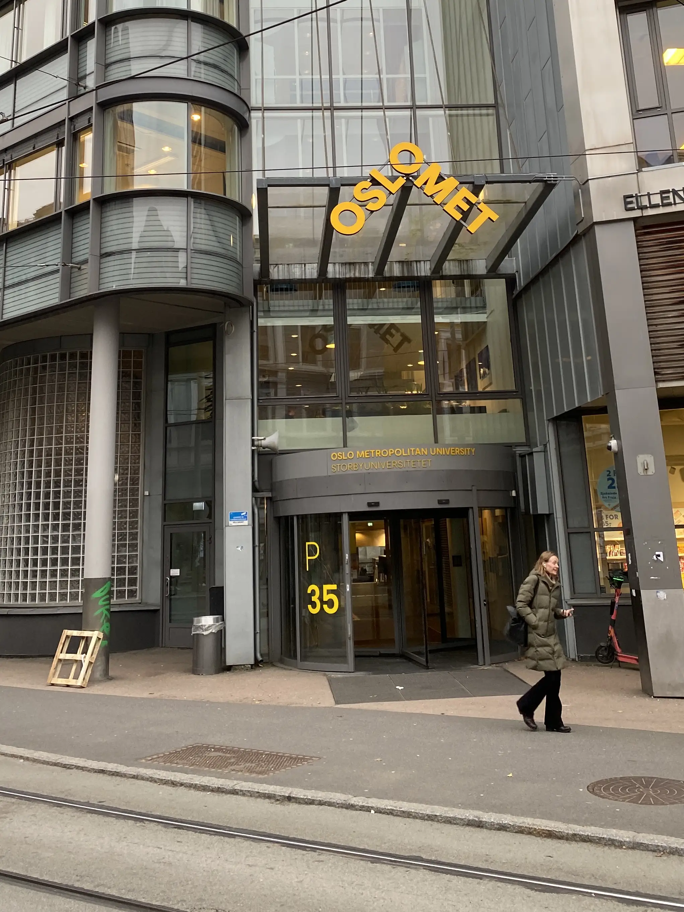
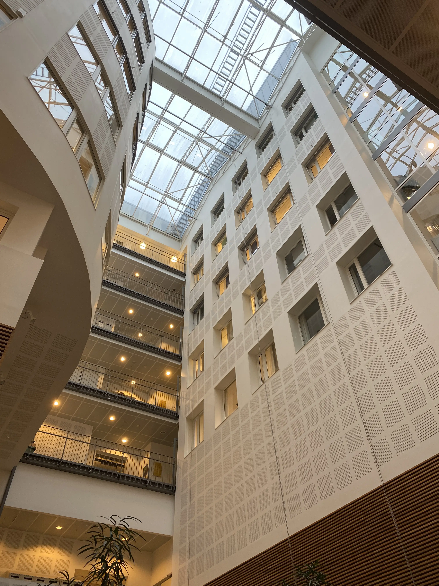

Introduction
Welcome to the official website about Oslo Metropolitan University, your gateway to a world-class educational experience in the heart of Norway's vibrant capital.
 Feel free to browse our collection of interesting websites related to the OsloMet campus.